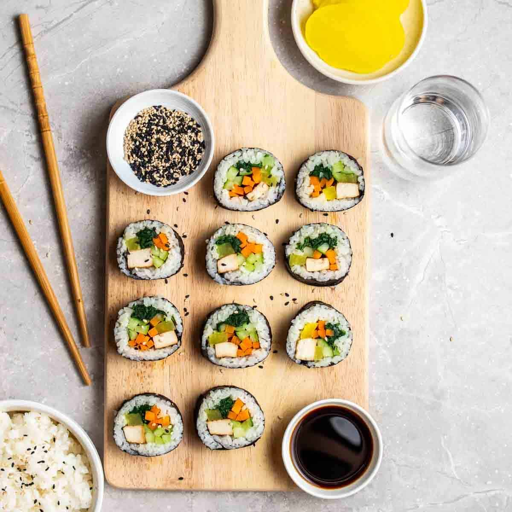

kim-BOP, sushi with the wasabi swapped and in a seaweed wrap!
A Korean dish made from cooked rice, vegetables, fish, and meat rolled in gim—dried sheets of seaweed—and served in bite-sized slices. The rice is seasoned with sesame oil and a pinch of salt, giving it a smooth, nutty flavor. The oil that is mixed with the rice helps to keep kimpab from drying out. This means that these rolls can be made up to a day ahead of time and refrigerated until you are ready to eat them. So they are perfect for a make-ahead lunch or picnic! And it does resemble sushi but thats for another day.
Ingredients:
- 4 dried seaweed sheets
- Regular or baby spinach
- 2 eggs, beaten
- Julienned
- 2 to 4 imitation crab sticks
- sticks of BBQ Kimbap ham
- 4 yellow radish pickle
Steps:
- Rinse the spinach and parboil it in rapidly boiling water (30 seconds to 1 minute). Drain the water away and run some cold water over the spinach. Gently squeeze the spinach to remove any excess water. Put the spinach into a bowl. Add 1/8 tsp salt and 1/2 Tbsp sesame oil then mix them well.
- Pre-heat a pan/skillet. Add a small dash of cooking oil and spread it around the pan. Add the beaten egg and cook both sides well over medium heat. Place the egg omelette on a cutting board and cut it into long strips.
- In a heated pan, lightly cook the carrots, crab sticks and kimbap ham (about 1 min per ingredients), separately, and over medium heat.
- Place the cooked rice into a mixing bowl then add 1/2 Tbsp sesame oil and 1/4 tsp fine sea salt.
- Now fill the seaweed with the filing ingredients. Make sure you evenly use the ingredients so that youre not short of them later.
- Place one yellow radish pickle at about 1/3 point of the seaweed then add three burdock strips, one ham strip, one crab stick around it. Then pile up a few eggs strips, carrot sticks, and some spinach. Then roll the seaweed.
Return to main page